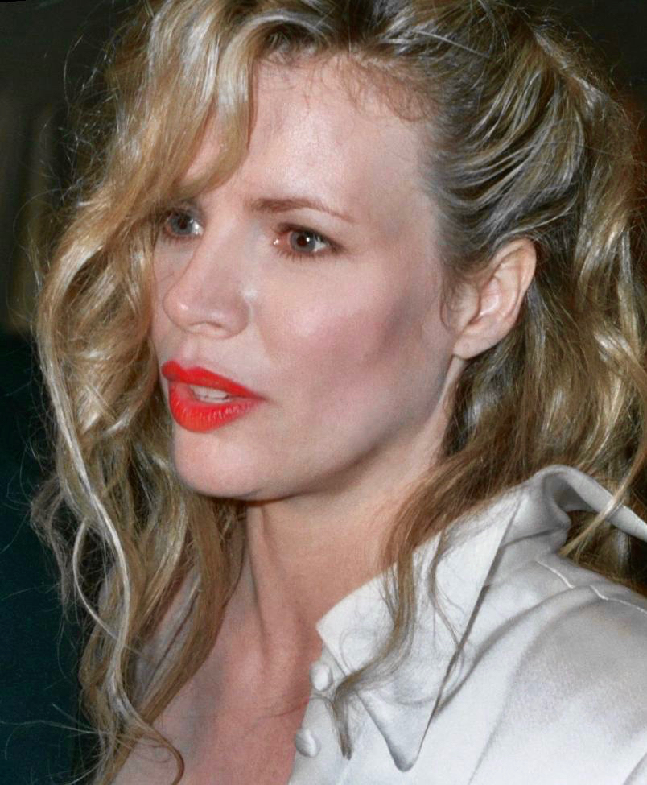
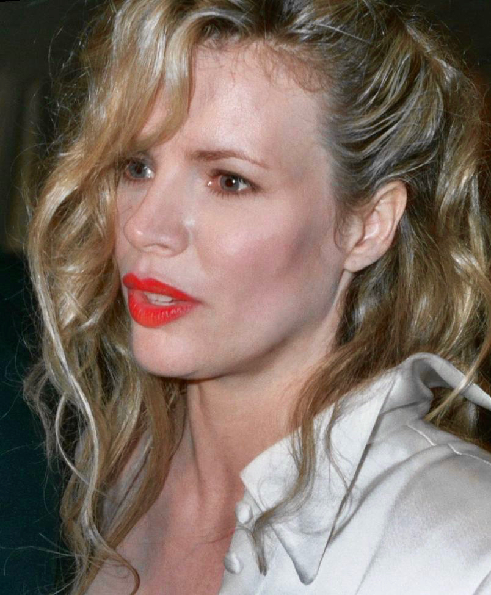

«Бетмен» (англ. Batman) — американський фільм Тіма Бертона 1989 року, що базується на однойменній серії коміксів про супергероя Бетмена.
Майкл Кітон - Бетмен / Брюс Вейн
Джек Ніколсон - Джокер / Джек Напьє
Кім Бейсінгер - Вікі Вейл
 

Роберт Вул - Александер Нокс
Пет Гінгл - комісар Джеймс Ґордон
Біллі Ді Вільямс - Гарві Дент